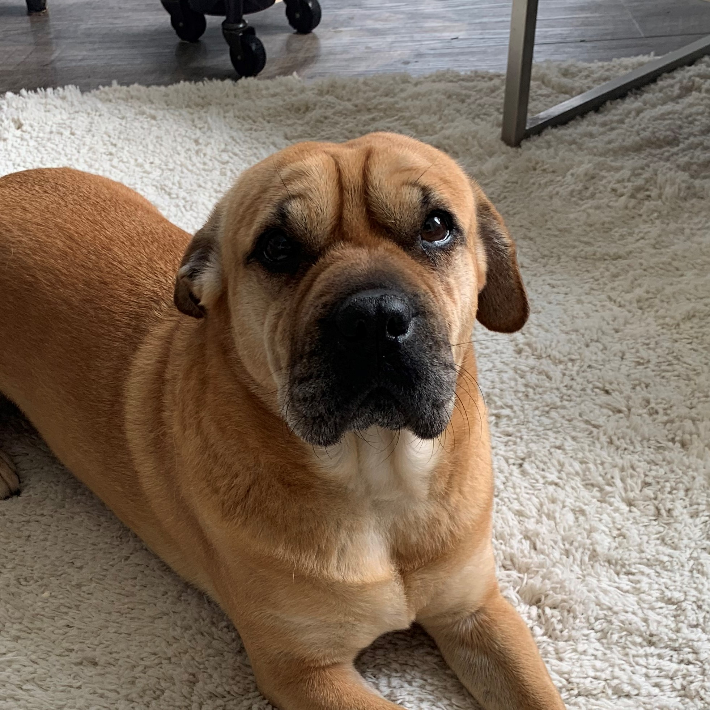
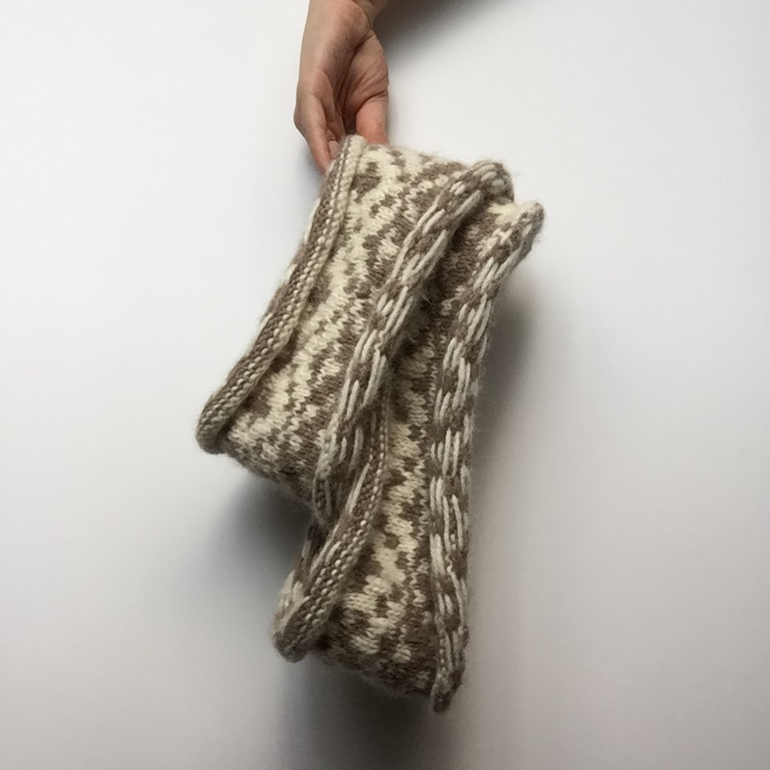

- My favorite food is any veggie breakfast burrito.
- My favorite places are grassy hills and art museums.
- I'm an outdoorsy social intovert. I like to be outside and I like going out but mostly by myself.
- I am part of the LGBTQIA+ community.

- This is my dog Maple. She is a small, friendly, wrinkly, 4 year old rescue.
- She is like my little shadow. With me wherever I go.
- Her favorite toy is her plush pikachu.
- Her favorite treats are chicken jerky and sweet potato.
- I have a hard time following manuals, and would much rather inovate.
- I work really well on my own, but not alone. Having a team to bounce ideas off of is where I work best.
- Continual Learning is and interst of mine.I love to dive deep into new research and new information.
- Multifaceted work and living is super importand to me, so I can be counted on to try something spontaneous.
- I have a large and varied work history that lends to me be able to take multiple perspecties during projects.

- I am a creator above most other things about me. I'm almost always workign with me hands.
- I like building and prototyping products for my own personal use.
- I am a knitter. I learned when I was very young and have one project in progess continually.
- Creating is very much in my nature.
- I am currently a student with University or Untah in their Coding Bootcamp. Graduation date January 2021.
- Worked on a Password Generator
- This protfolio page
.JPG)